Figure
11.1 — Synchronized note table and C-scan zoom view.
Figure
11.1 — Synchronized note table and C-scan zoom view.Dacon Inspection Studio — EMSENZ Data Viewer & Analysis Tool
Version: 2026 — English Edition
ToolEMZ is the EMSENZ (Electromagnetic Sensing) module of the Dacon Inspection Studio application. It provides a comprehensive environment for viewing, analysing, and reporting electromagnetic inspection data collected by in-line inspection (ILI) tools. The tool is designed for pipeline inspection engineers and data analysts who work with hardness mapping data.
.emz single-file data and
.EMZProj multi-file projects.rawemz) to processed EMZ files using
GPU-accelerated filtering.emz — EMZ Data FileThe primary processed data format. Each file contains a header followed by sequential records:
| Field | Type | Description |
|---|---|---|
| Sample Counter | UINT32 | Sequential record index |
| V1 Amplitude | UINT16 | 1st harmonic (3 kHz) |
| V3 Amplitude | UINT16 | 3rd harmonic (9 kHz) |
| V5 Amplitude | UINT16 | 5th harmonic (15 kHz) — V1.1 only |
| Odometer Counts | INT32 | Signed odometer values (up to 3 odometers) |
| Odometer Phases | INT16 | Signed phase data |
File versions:
| Version | Harmonics | Description |
|---|---|---|
| V1.0 | V1, V3 | 3 kHz and 9 kHz |
| V1.1 | V1, V3, V5 | 3 kHz, 9 kHz, and 15 kHz |
.EMZProj — EMZ Project
FileAn XML-based project file that references multiple data files from the same inspection run. It logically merges data from several data loggers into a single view.
<Project FileCount="4">
<File1 Name="DL1\data.emz" DelayInSecond="0.0" />
<File2 Name="DL2\data.emz" DelayInSecond="0.5" />
<File3 Name="DL3\data.emz" DelayInSecond="1.0" />
<File4 Name="DL4\data.emz" DelayInSecond="1.5" />
</Project>Supported file types within a project:
.emz, .imu, .db,
.csv, .txt, .odom
.rawemz /
.RAWEMZ — Raw EMZ Data FileRaw binary data captured directly from the data loggers before signal
processing. These files are typically very large (hundreds of GB for
long inspections) and need to be converted to .emz format
for analysis.
.emz
file..EMZProj file..EMZProj
file.The application uses an MDI (Multiple Document Interface) layout. When an EMZ file or project is opened, the workspace displays:
| Area | Description |
|---|---|
| Menu Bar | File, Tools, EMZ Sensors, View, Window, Help |
| Toolbar | Quick-access buttons for common actions |
| C-Scan Preview | Full-length overview of the pipe data (heat map) |
| C-Scan Zoom | Detailed zoomed view of the selected region |
| Plot Scan | Line plot of signal values at the cursor position |
| Graph Panel | B-scan graphs (odometer, distance, raw signal, HV, tool top) |
| Note Table | Tabular view of annotations and defect markings |
| Menu Item | Description |
|---|---|
| New → EMZ Project | Create a new .EMZProj project file |
| Open | Open .emz or .EMZProj files |
| Save / Save As | Save the current project |
| Exit | Close the application |
| Menu Item | Description |
|---|---|
| EMZ Note File | Open or create an EMZ note database |
| Generate raw EMZ file | Generate synthetic .rawemz data for testing |
| Convert .RAWEMZ to .EMZ | Convert a single raw file to processed EMZ |
| Batch Convert .RAWEMZ to .EMZ | Batch-convert an entire folder of raw files |
| Extract Partial .RAWEMZ | Extract a time segment from a raw data file |
This is the primary menu for data interaction and is available when an EMZ file is open.
| Menu Item | Description |
|---|---|
| Sensors | |
| HV | Display Hardness Value (calculated) |
| Ratio | Display V3/V1 ratio |
| V3 | Display 3rd harmonic (9 kHz) amplitude |
| V1 | Display 1st harmonic (3 kHz) amplitude |
| V5 | Display 5th harmonic (15 kHz) amplitude |
| Mouse Mode | |
| Normal | Standard navigation mode |
| Add Notes | Click on C-scan to add annotation notes |
| Add Welds | Click on C-scan to mark girth welds |
| Hide Channels | Click channels on C-scan to hide them |
| X-Axis Value | |
| Time | Display time on the horizontal axis |
| Index | Display sample index on the horizontal axis |
| Odometer 1–3 | Display odometer distance on the horizontal axis |
| View Options | |
| Properties | Open the C-scan properties dialog |
| Super Sample | Enable super-sampling for smoother rendering |
| Enable Max/Min | Show maximum and minimum defect markers on C-scan |
| Menu Item | Description |
|---|---|
| Display Odo Line — Odo 0 | Show unified odometer graph |
| Display Odo Line — Odo 1 | Show odometer 1 graph |
| Display Odo Line — Odo 2 | Show odometer 2 graph |
| Display Odo Line — Odo 3 | Show odometer 3 graph |
| Menu Item | Description |
|---|---|
| Light Properties | Adjust 3D lighting parameters |
| Parameter | Configure live data parameters |
| Exit | Close the live data view |
The C-scan viewer is the central component of ToolEMZ. It provides a colour-coded heat map of sensor data across the pipe circumference (vertical axis) and along the pipe length (horizontal axis).
The C-scan can display five data planes, each representing a different aspect of the electromagnetic measurement:
| Data Plane | Matrix Name | Description |
|---|---|---|
| HV | matHV | Hardness Value — calculated from harmonic ratio and calibration |
| Ratio | matRatio | V3/V1 ratio — primary indicator of material hardness |
| V1 | matV1 | 1st harmonic amplitude (3 kHz fundamental) |
| V3 | matV3 | 3rd harmonic amplitude (9 kHz) |
| V5 | matV5 | 5th harmonic amplitude (15 kHz) — requires V1.1 file format |
The viewer operates in two modes:
The crosshair uses a dedicated overlay renderer for smooth, responsive tracking without re-rendering the entire chart.
PR #531: Improved crosshair responsiveness with overlay renderer — crosshair actors are rendered in the overlay layer for fast, smooth updates without re-rendering the main chart.
Figure 6.1 — Box widget for zoom navigation in the C-scan preview.
Each data plane can have its own color table. Available color options include:
Color settings are accessible via EMZ Sensors → Properties or the C-scan properties dialog.
When Enable Max/Min is active, the viewer highlights the maximum and minimum values within the visible region, helping analysts quickly locate potential defects.
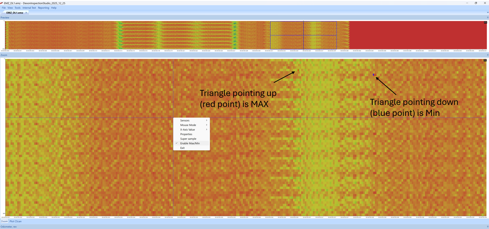
Figure 6.2 — Max/Min defect markers displayed on the C-scan.The data viewer supports six graph types displayed below the C-scan:
| Graph | Description |
|---|---|
| Odometer Count | Raw odometer encoder counts (signed) |
| Odometer Angle | Phase angle of the odometer |
| Distance | Calculated distance from odometer data |
| Raw Signal | Unprocessed waveform from the sensor |
| Hardness Value | Computed HV along the pipe length |
| Tool Top | Tool orientation data from IMU |
The waveform viewer provides an A-scan display at the cursor position. Zoom controls:
| Action | Effect |
|---|---|
| Left-Click + Vertical Drag | Zoom Y-axis |
| Left-Click + Horizontal Drag | Zoom X-axis |
| Right-Click + Drag | Pan the view |
| Right-Click (no drag) | Reset zoom to full range |
The horizontal axis can be switched between:
The unified odometer selects the highest-change reading per 1-second interval across all three odometers to handle mechanical vibration, slippage, and bend effects.
A typical EMSENZ ILI tool uses multiple data loggers (up to 4), each capturing 64 channels. The EMZ Project feature merges these data sources into a single logical view of up to 256 channels.
.emz files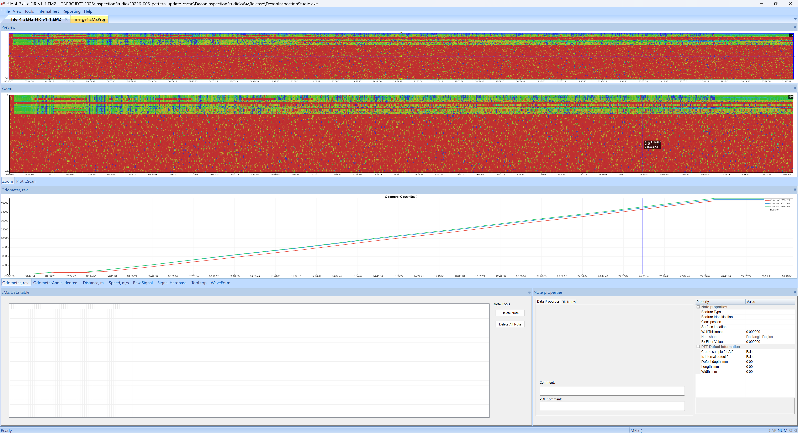
Figure 8.1 — Single EMZ file displayed in C-scan viewer.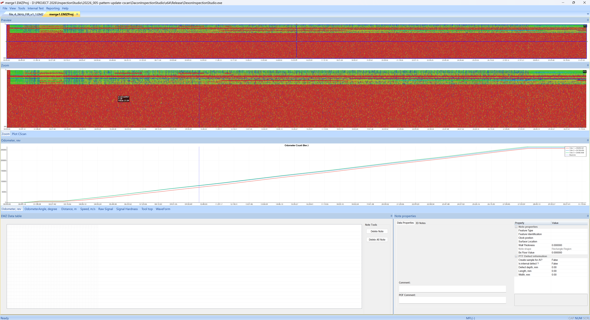
Figure 8.2 — Multiple EMZ files merged via pattern file, showing all data loggers combined.The pattern file defines the physical arrangement of sensor coils across multiple data loggers. Because coils from different data loggers are interleaved on the tool body, the pattern file remaps channels to their correct circumferential position.
Access: Open via the C-scan properties dialog → Pattern tab, or via EMZ Sensors → Properties.
The alignment file specifies the axial distance offset for each channel. This compensates for the fact that sensor coils are not all at the same longitudinal position on the tool.
Example alignment values:
0, 0.3, 0.6, 0.9, 0, 0.3, 0.6, 0.9, ...Each value (in metres) represents how far forward or backward each channel’s data should be shifted.
Two alignment modes are available:
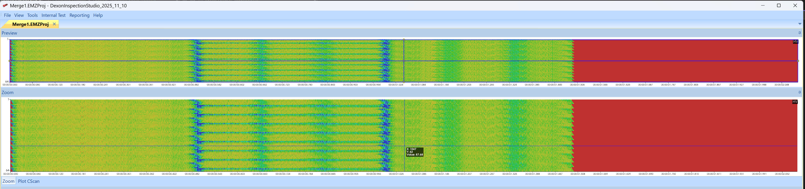
Figure 9.1 — Data Logger 1 data before alignment.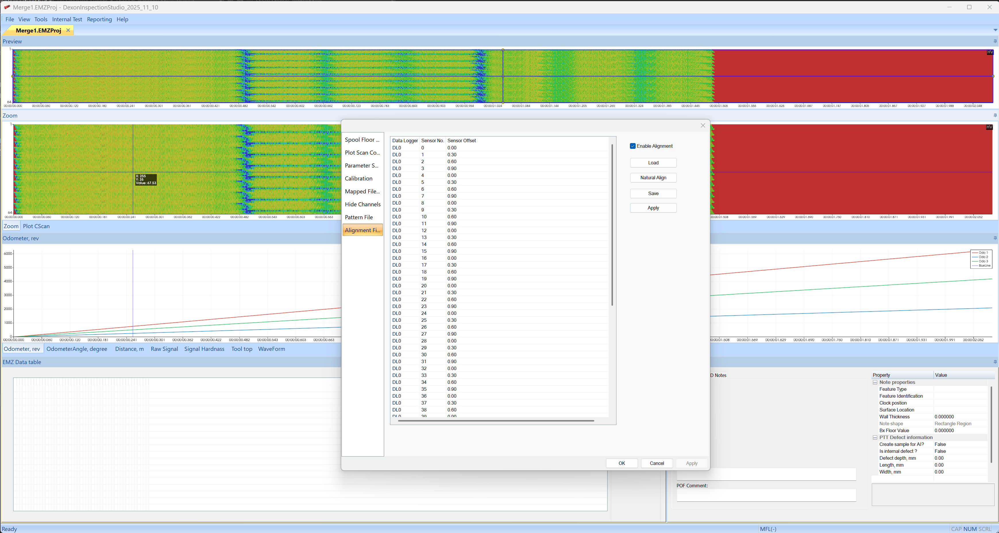
Figure 9.2 — Data Logger 1 data after applying alignment file with distance offsets.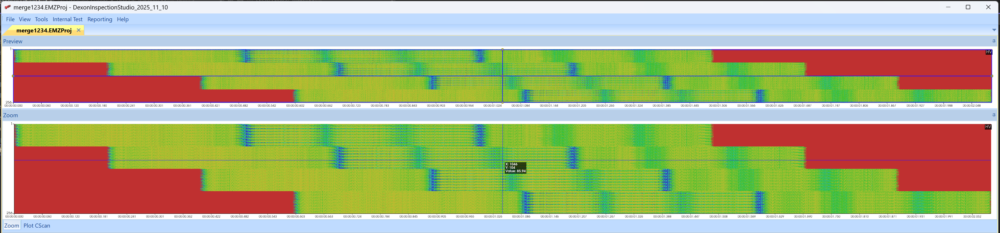
Figure 9.3 — Four data loggers merged without alignment.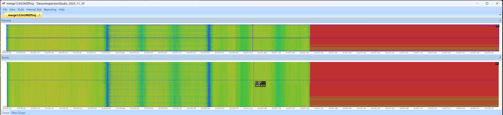
Figure 9.4 — Four data loggers merged with alignment file applied.When working with EMZ projects, alignment can be applied at the project level:
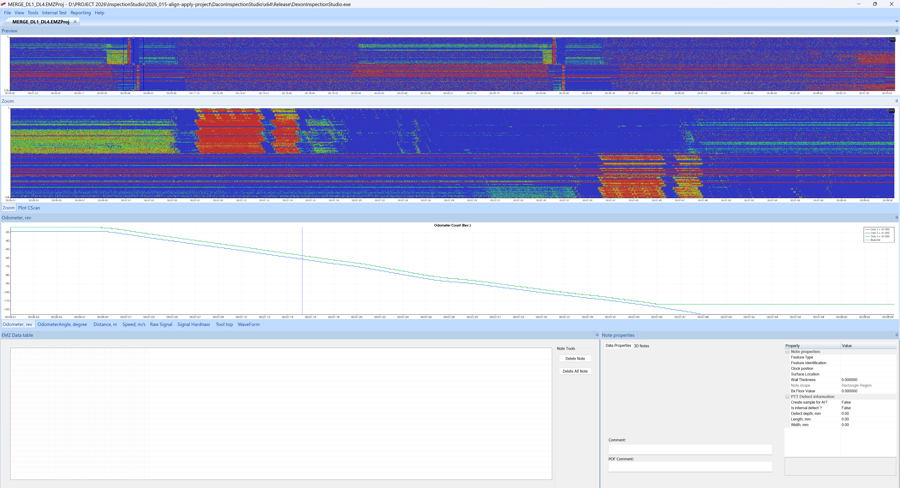
Figure 9.5 — Project view: DL1 + DL4 merged.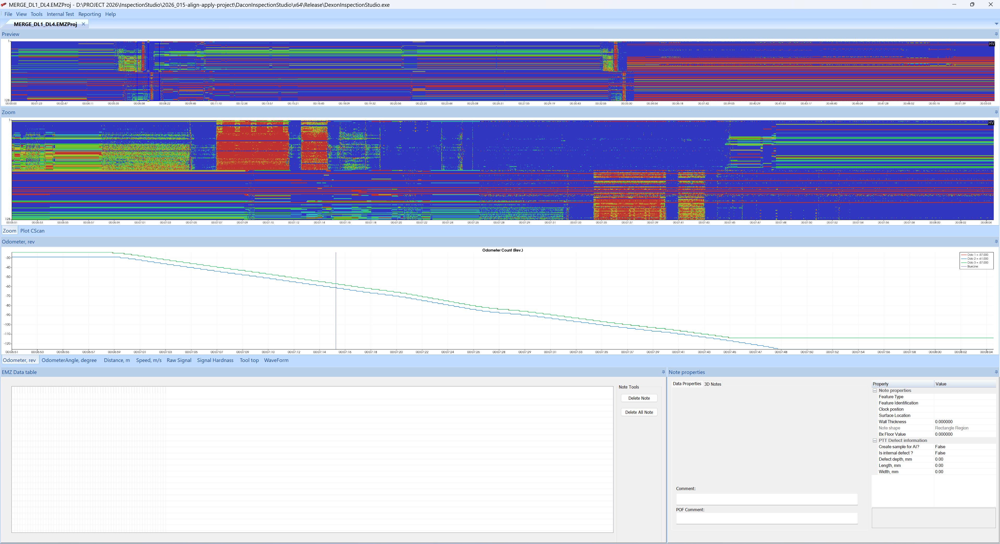
Figure 9.6 — Alignment by distance applied to the project.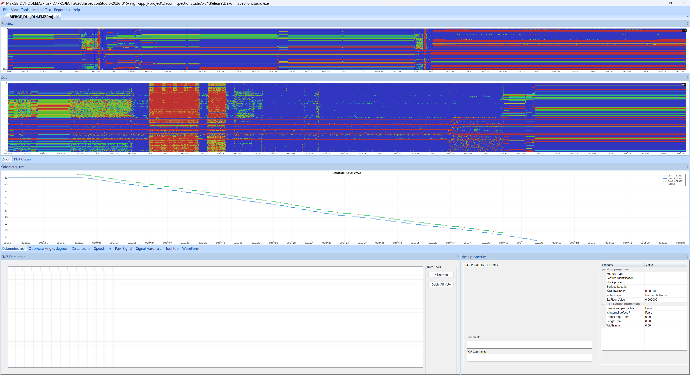
Figure 9.7 — Alignment by time applied to the project.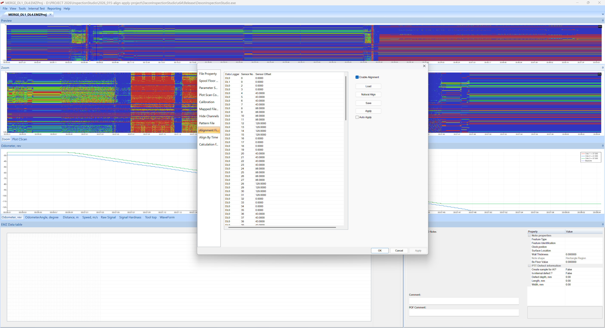
Figure 9.8 — Alignment settings dialog.Access: Tools → Convert .RAWEMZ to .EMZ
The conversion dialog allows you to:
.rawemz filePerformance:
| Method | 1-hour inspection | Data Reduction |
|---|---|---|
| Legacy FFT | ~30 seconds | ~94% |
| GPU FIR | ~20–30 seconds | ~96% |
The GPU FIR method uses CUDA for parallel processing with a unity-gain narrow-band bandpass FIR filter and Blackman windowing to minimize harmonic ratio errors.
Access: Tools → Batch Convert .RAWEMZ to .EMZ
.rawemz files.Access: Tools → Extract Partial .RAWEMZ
Extracts a time segment from a large .rawemz file,
useful for isolating specific sections of an inspection run for detailed
analysis.
When the live data stream is stopped, the application prompts the
user to convert the recorded .rawemz file to
.emz format. The conversion runs in a background
thread.
PR #453: After live data streaming stops, the file handle is closed properly and the user is prompted to convert .RAWEMZ to .EMZ using a background conversion thread.
The note system allows analysts to annotate the C-scan with observations, defect markings, and weld locations. Notes are stored in a database format (SQLite or MS Access).
The note table displays all annotations in a tabular format. It is synchronized with the C-scan zoom view — hovering over a note in the table highlights it on the C-scan, and vice versa.
PR #511: Added synchronization between C-scan zoom and Note table. Hovering is supported in the C-scan zoom view (Add Note and Add Weld modes operate separately). In the table view, hovering works in all modes.
Figure
11.1 — Synchronized note table and C-scan zoom view.
Notes contain the following information:
| Property | Description |
|---|---|
| ID | Unique identifier (primary key) |
| Category | ANOM, WELD, COCL, CORR, MIAN, LAMI, CRAL, DENP, etc. |
| Location | Distance and circumferential position |
| Dimensions | Width and length (based on sizing criteria) |
| HV Value | Hardness value at the note location |
| Threshold | Difference threshold used for sizing |
Spool floor analysis determines the baseline signal level for each pipe section (typically between welds). Defects are then identified as deviations above this baseline.
Access: EMZ Sensors → Properties → Spool Floor tab
| Parameter | Description |
|---|---|
| Threshold (%) | Percentage above floor value to trigger detection (e.g. 115%) |
| Delete Sections | Remove specific pipe sections from analysis |
| Blob Filter | Filter small blobs by minimum width and length |
| Save / Load | Persist spool floor parameters to file |
The pipeline is divided into sections (by weld position). Each section has its own floor value, and the threshold is calculated as a percentage of that floor. This adaptive approach handles variations in pipe material and wall thickness along the pipeline.
Access: EMZ Sensors → Properties → Calibration tab
The calibration page allows adjustment of the V1, V3, and V5 multiplication factors to compensate for non-uniform coil properties. After adjusting the values, press Start Processing to recalculate the C-scan.
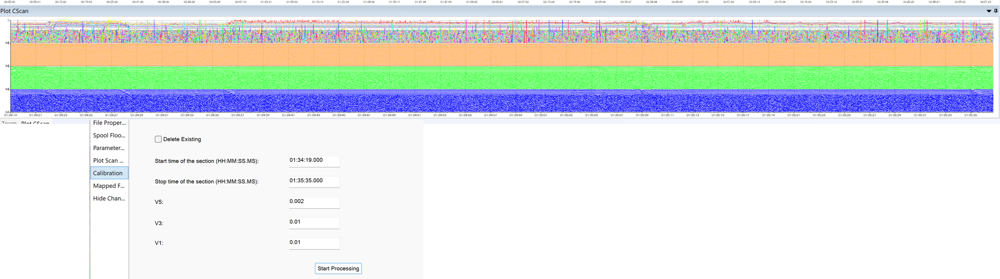
Figure 13.1 — Ratio calibration dialog with V5, V3, and V1 adjustment controls.Available in both manual and automatic modes:
Access: EMZ Sensors → Properties → Calc Formula tab
The formula property page allows users to define and adjust the mathematical formula used to convert raw harmonic data into hardness values (HV). The formula rendering uses LaTeX-style display for clarity.
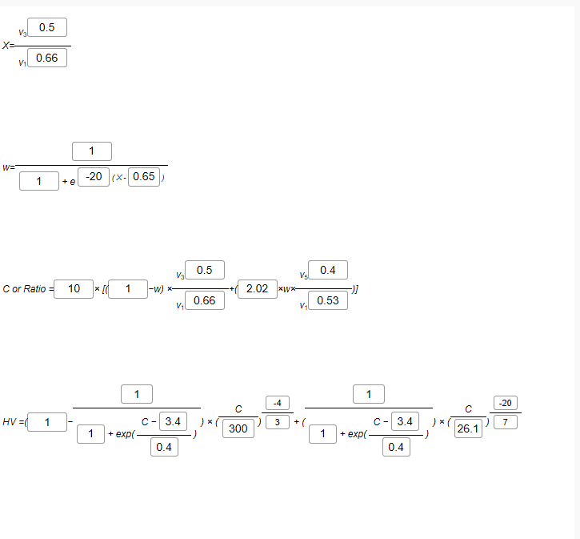
Figure 14.1 — Calculation formula property page with LaTeX rendering.Additional formula options include:
ToolEMZ provides several filtering options to improve C-scan visualization and reduce noise:
| Filter | Parameters | Description |
|---|---|---|
| Moving Average | Window size | Simple sliding window average |
| Median | Window size | Non-linear filter that preserves edges |
| Savitzky–Golay | Window size, Polynomial order | Smoothing filter that preserves peaks and valleys |
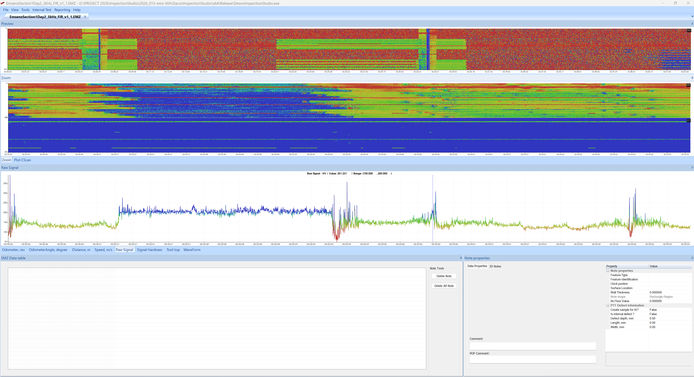
Figure 15.1 — C-scan with no filter applied.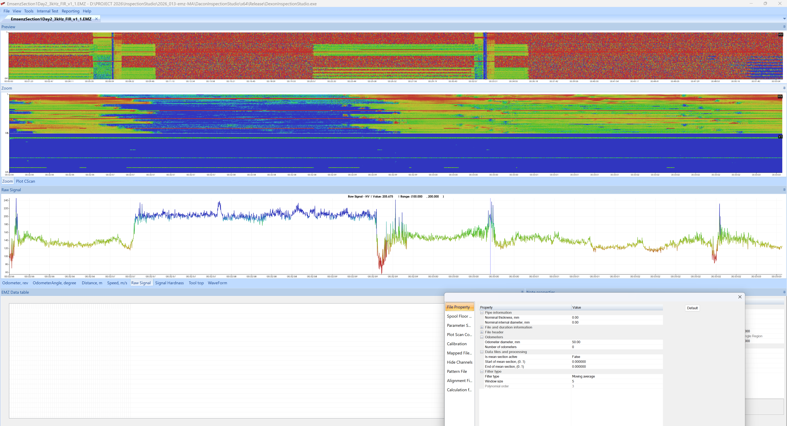
Figure 15.2 — Moving average filter (window size = 5).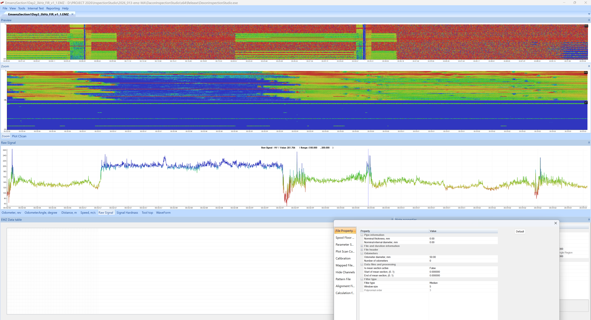
Figure 15.3 — Median filter (window size = 5).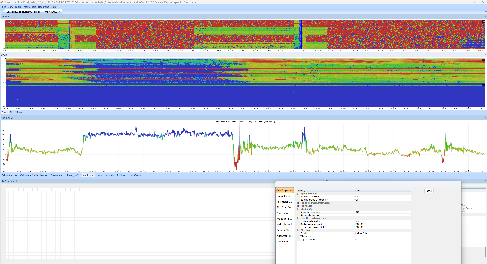
Figure 15.4 — Savitzky–Golay filter (window size = 11, polynomial order = 3).The live data module provides real-time visualization of sensor data during inspection. Data is transmitted from the acquisition board to the PC via USB 3.0 at 54 kSPS across 64 channels.
The live data system uses a multi-threaded architecture to prevent UI freezing:
| Thread | Purpose |
|---|---|
| USB 3.0 Streaming | Receives raw data from the hardware |
| FFT Calculation | Computes harmonic amplitudes in real time |
| GUI Display | Updates the live visualization |
The live FFT view shows bar charts for each channel:
 Figure 16.1 — Auto amplitude
scan re-enabling controls after scan completion.
Figure 16.1 — Auto amplitude
scan re-enabling controls after scan completion.
In PC logging mode, raw sensor data is streamed to the PC and saved
directly to a .rawemz file. When streaming stops, the user
is prompted to convert the file to .emz format.
ToolEMZ includes a VTK-based 3D pipe visualization that renders the pipeline surface with C-scan data mapped as textures. The 3D path is generated from IMU (Inertial Measurement Unit) data.
Access: EMZ Live Data → Light Properties
Configure the 3D scene lighting including ambient, diffuse, and specular components.
ToolEMZ can generate Microsoft Word reports containing:
Based on user-selected features, the system generates dig-up sheets that handle all anomaly types:
| Code | Description |
|---|---|
| COCL | Coating Loss |
| CORR | Corrosion |
| MIAN | Mill Anomaly |
| LAMI | Lamination |
| CRAL | Crack-Like |
| DENP | Dent with Profile |
The interactive report system provides:
Access: Available through the download interface when connected to the acquisition hardware.
Features:
 Figure 19.1 —
Multi-file download dialog for selecting and transferring data from the
acquisition hardware.
Figure 19.1 —
Multi-file download dialog for selecting and transferring data from the
acquisition hardware.
The data logger can be configured as a USB composite device providing:
| Action | Effect |
|---|---|
| Left-Click + Drag (in preview) | Move the navigation rectangle |
| Left-Click (in zoom, Normal mode) | Move crosshair cursor |
| Left-Click (in zoom, Add Notes mode) | Place a new note |
| Left-Click (in zoom, Add Welds mode) | Place a weld marker |
| Left-Click (in zoom, Hide Channels mode) | Toggle channel visibility |
| Action | Effect |
|---|---|
| Left-Click + Vertical Drag | Zoom Y-axis |
| Left-Click + Horizontal Drag | Zoom X-axis |
| Right-Click + Drag | Pan the view |
| Right-Click (no drag) | Reset zoom to full range |
The EMZ file header (10,240 bytes) contains:
| Offset | Size | Type | Description |
|---|---|---|---|
| 0 | 4 | UINT32 | Sample counter |
| 4 | 2 | UINT16 | V1 amplitude |
| 6 | 2 | UINT16 | V3 amplitude |
| 8 | 4×3 | INT32 | Odometer counts (3 odometers) |
| 20 | 2×3 | INT16 | Odometer phases |
Same as V1.0 with the addition of:
| Offset | Size | Type | Description |
|---|---|---|---|
| 8 | 2 | UINT16 | V5 amplitude |
<?xml version="1.0" encoding="UTF-8"?>
<Project FileCount="N">
<File1 Name="relative/path/to/file1.emz" DelayInSecond="0.0" />
<File2 Name="relative/path/to/file2.emz" DelayInSecond="0.5" />
<!-- ... -->
<FileN Name="relative/path/to/fileN.emz" DelayInSecond="X.X" />
</Project>| Term | Definition |
|---|---|
| A-scan | Signal waveform at a single point (time domain) |
| B-scan | Cross-sectional signal display along one axis |
| C-scan | Plan-view colour heat map of the full pipe surface |
| DL | Data Logger — hardware unit that captures sensor data |
| EMZ | EMSENZ data format (processed harmonics) |
| EMSENZ | Electromagnetic Sensing — the inspection technology |
| FFT | Fast Fourier Transform — used for harmonic extraction |
| FIR | Finite Impulse Response — filter type used in GPU conversion |
| HV | Hardness Value — derived from harmonic ratio and calibration |
| ILI | In-Line Inspection — pipeline inspection using internal tools |
| IMU | Inertial Measurement Unit — measures tool orientation |
| RAWEMZ | Raw binary data before harmonic extraction |
| V1 | 1st harmonic amplitude (3 kHz fundamental) |
| V3 | 3rd harmonic amplitude (9 kHz) |
| V5 | 5th harmonic amplitude (15 kHz) |
| VTK | Visualization Toolkit — library for 3D rendering |
| Spool Floor | Baseline signal level for a pipe section |
| Pattern File | Defines physical sensor arrangement across data loggers |
| Alignment File | Specifies axial distance offset per channel |
Document generated from the Dacon Inspection Studio codebase, pull request history, and EMSENS bi-weekly progress reports.
Last updated: March 2026